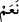

Gözler de Allah’ın kudretini görmeye yarar
Kardeşinin ve dostunun ayıplarına karşı onları yummalısın
“Kulakları var, fakat onlarla işitmezler.” Ayetleri ve öğütleri, düşünmek ve anlamak
üzere dinlemezler.
Kulak, Kur’an ve nasihat geçitidir
İftira gibi, batıl söz gibi şeyleri duymamaya çalışmalısın
“İşte onlar” zikredilen çirkin vasıflara sahip olan bu kimseler, anlayışlarının
yokluğu, ibret nazarıyla bakmamaları ve düşünmek için dinlememeleri bakımından dört
ayaklı “hayvanlar gibidirler.” onlara benzerler. Yâhut bütün his ve güçlerini, geçim ve
yiyip içmeye yönlendirmeleri, sadece onun peşinde koşmaları bakımından hayvanlara
benzerler.
“__WORD__”, deve ve koyun mânâsına gelen veya çoğu zaman deve anlamında kullanılan “__WORD__” veya “__WORD__” kelimesinin çoğuludur. Kâmûs’ta böyle zikredilmektedir.
“Hatta daha da sapıktırlar.” Buradaki “ __WORD__ ” edatı, önceki hükmü iptal için değil, bir
hükümden başka bir hükme intikal için kullanılmıştır. Yani onların hayvanlar gibi
olmaları hükmünden, onların tuttukları yol bakımından hayvanlardan daha sapık
oldukları hükmüne geçilmiştir. Çünkü hayvanlar kendilerince faydalarına ve zararlarına
olan şeyleri idrak edip, faydalı olanı elde etmek ve zararlı olandan da kaçınmak üzere
bütün güçlerini sarfederler. Onlar ise böyle değildir. Hayvanların ebedîlikle alâkası
yoktur. Onlar ise hem ebedî nimetleri terk etmekte, hem de sonsuz azaba atılmaktadırlar.
Denilir ki: Hayvanlar sahiplerini tanırlar, onları hatırlayıp itaat ederler. Onlar ise
Rablerini tanımazlar, ne O’nu anarlar, ne de O’na itaat ederler. Haberde şöyle gelmiştir:
“Her şey Allah’a, Âdemoğlundan daha itaatkârdır.”
Yazık! Değerli olarak yaratılmış insanoğlu
Nasıl hayvanlar gibi, hatta daha da sapık olabilir?
“Ve işte” ahiret hayatından ve orada âsîler için hazırlanmış olan cezalardan “gafiller
onlardır.” İnsanda bir ruhânî yön, bir de cismânî yön vardır. Ona hem akıl, hem de
şehvet verilmiştir. Eğer aklı, nefsinin arzularına galip gelirse meleklerden üstün olur.
Nefsine ve hevasına mağlup olursa o zaman da hayvanlardan daha aşağı hale gelir.
Melekten hissen var, şeytandan bir nasibin
Şeytanlığı terk et, fazilette meleği bile geç
Allah Teâlâ, insanları kısım kısım yaratmıştır. Onlardan bir kısmını, güzellik ve
cemalini göstermek üzere yakınlık ve muhabbet için yaratmıştır. Bunlar, ehlullahtır;
Allah’ın seçkin kullarıdır. Bunlar Allah’ın kelamını yine Allah’la işitirler; cemâlini
görürler ve kemâlini tanırlar.
Onlardan bir kısmını, lütuf ve rahmetini göstermek üzere cennet ve onun nimetleri için